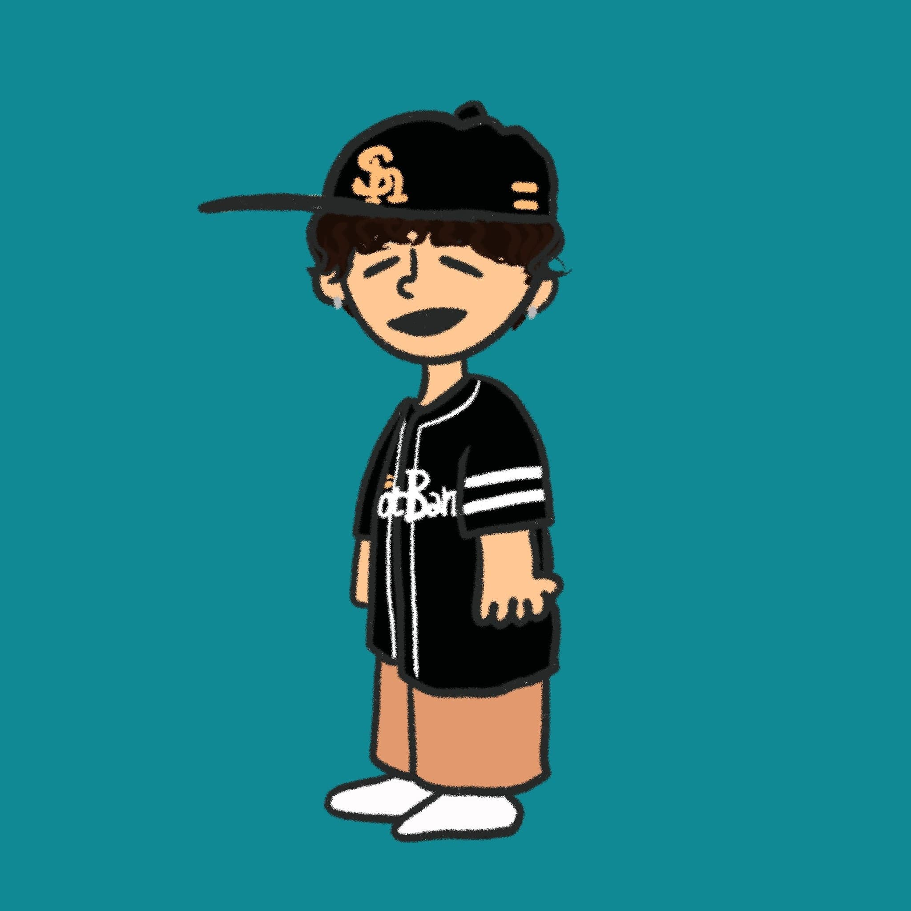

— Illustrator · Osaka, Japan
Koyuki
Nishi
西こゆき — イラストレーション

— About
絵を描くことが
好きなホークスファン。
NISHI KOYUKI。大阪を拠点にイラストを描いています。 人物、動物、何気ない瞬間。線と色で、その時々の感覚を残しています。
- Based
- Osaka, Japan
- Style
- Hand-drawn · Color
- Contact
- @roba_illust
— Works
SELECTED ILLUSTRATIONS
@roba_illust の投稿風に並べました。クリックで拡大表示します。
-
87 likes
roba_illust 結婚式のお祝いに描いたイラスト。JOJO風で。 #illustration #jojo #wedding
-
62 likes
roba_illust ポージング決まった日。 #jojo
-
54 likes
roba_illust 表情にこだわった一枚。 #jojo #illustration
-
41 likes
roba_illust JOJO #04 #jojo
-
38 likes
roba_illust JOJO #05 #jojo
-
33 likes
roba_illust JOJO #06 #jojo
-
48 likes
roba_illust 友達を描いた一枚。 #portrait #friends
-
36 likes
roba_illust 友達 #02 #friends
-
29 likes
roba_illust 友達 #03 #portrait
-
22 likes
roba_illust 友達 #04 #friends
-
27 likes
roba_illust 友達 #05 #portrait
-
19 likes
roba_illust 友達 #06 #friends
-
71 likes
roba_illust 動物シリーズ #01 #animal
-
58 likes
roba_illust 動物 #02 #illustration
-
43 likes
roba_illust 動物 #03 #animal
-
35 likes
roba_illust 動物 #04 #animal
-
40 likes
roba_illust 動物 #05 #animal
-
31 likes
roba_illust 動物 #06 #animal
-
52 likes
roba_illust 大好きなホークス。 #baseball #hawks
-
44 likes
roba_illust 食べ物シリーズ。 #food
-
26 likes
roba_illust お笑い好き。 #comedy
-
38 likes
roba_illust アニメシリーズ。 #anime
-
67 likes
roba_illust 出産祝いに。 #baby
-
30 likes
roba_illust バスケ。 #basketball
— Contact